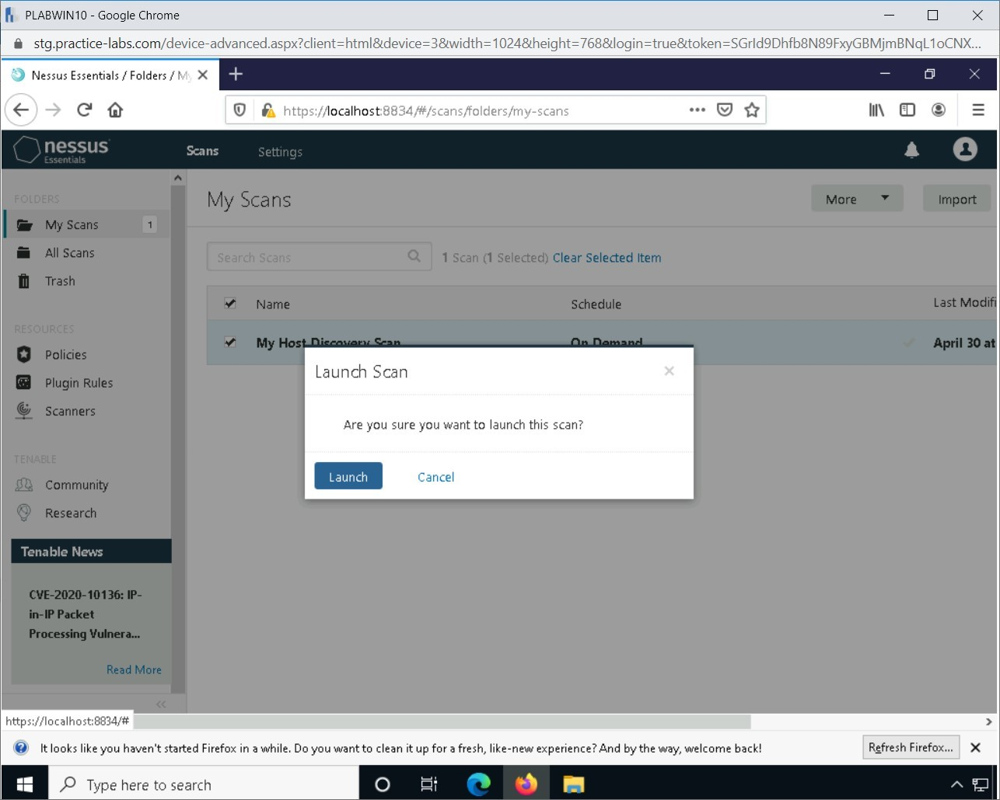
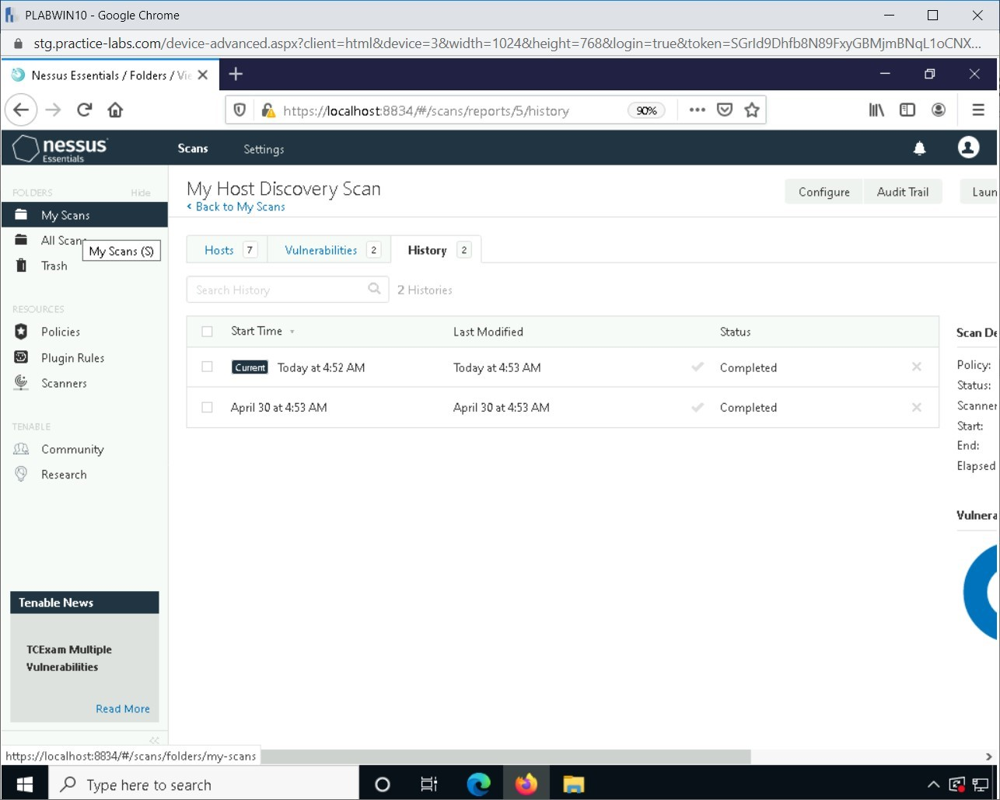
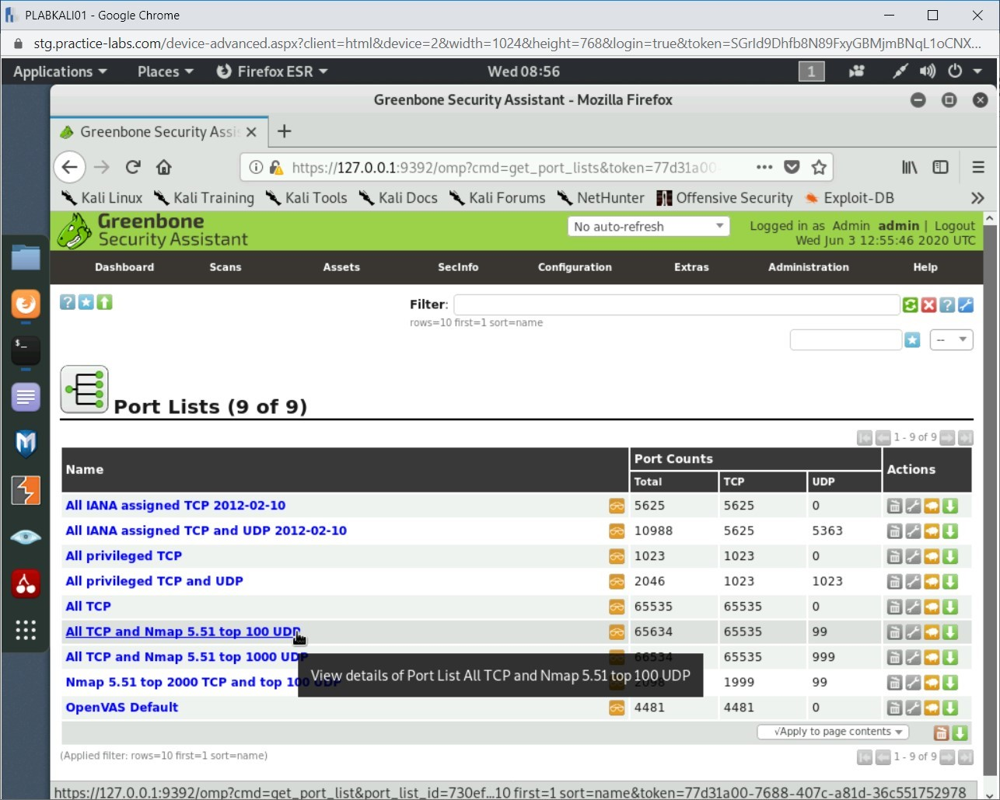
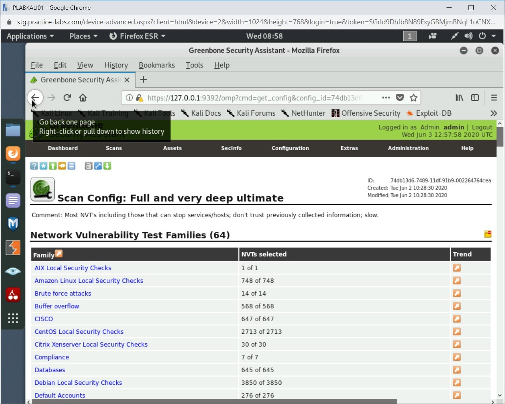
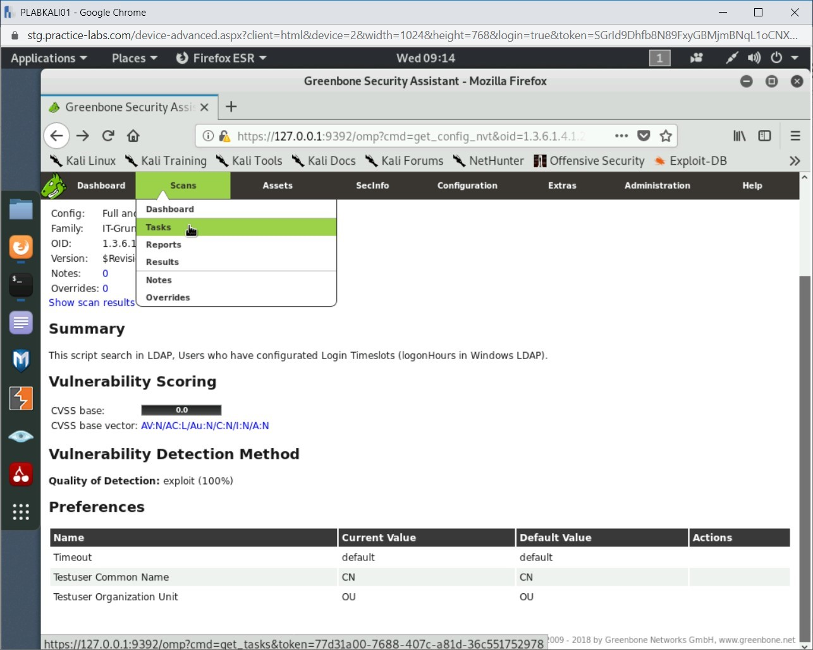

Introduction
9beca326-b493-4b0e-b3dc-d7dfb77df3c9
Welcome to the Infrastructure Vulnerability Scanners Practice Lab. In this module, you will be provided with the instructions and devices needed to develop your hands-on skills.
dc640c20-9434-45ea-b7c2-6d4d6a196bfc
Learning Outcomes
In this module, you will complete the following exercises:
- Exercise 1 - Nessus
- Exercise 2 - OpenVAS
After completing this lab, you will be able to:
- Perform a Basic Scan
- Save Reports
- Start up OpenVAS
- Use OpenVAS
- Scan Using OpenVAS
Exam Objectives
The following exam objectives are covered in this lab:
- 1.4 Given a scenario, analyze the output from common vulnerability assessment tools
Note: Our main
focus is to cover the practical, hands-on aspects of the exam
objectives. We recommend referring to course material or a search engine
to research theoretical topics in more detail.
Lab Duration
It will take approximately 1 hour to complete this lab.
7ca097e1-3b9c-4203-a9a2-3215787353ca
Help and Support
For more information on using Practice Labs, please see our Help and Support page. You can also raise a technical support ticket from this page.
Click Next to view the Lab topology used in this module.
d2c53300-f951-45a9-9aa4-3d4ecae69e11
Lab Topology
During your session, you will have access to the following lab configuration.

Depending on the exercises, you may or may not use all
of the devices, but they are shown here in the layout to get an overall
understanding of the topology of the lab.
- PLABDC01 - (Windows Server 2019 - Domain Server)
- PLABDM01 - (Windows Server 2019 - Domain Member)
- PLABKALI01 - (Kali Linux 2019 - Linux Kali)
- PLABWIN10 - (Windows 10 - Domain Member Workstation)
- PLABCENTOS - (Centos 8 Linux - Stand-alone Linux Server)
- PLABALIENVAULT - (Alien Vault Linux Security Management Platform)
Click Next to proceed to the first exercise.
<
Home |
README |
Vulnerability Scanning and Enumeration and Assessment >
CompTIA Cybersecurity Analyst (CySA+) Practice Labs
Exercise 1 - Use Nessus
Nessus is a vulnerability scanning platform, used by
people in multiple cyber security fields, including security analysts.
The Nessus tool is used mostly to scan vulnerabilities. It is important
to note that Nessus Professional is only accessible for 1 installation,
for 7 days.
Nessus prevents network attacks by identifying
vulnerabilities and other issues that may be used by hackers to
penetrate a network or infrastructure.
In this task, you will configure Nessus so that you can scan the network.
Learning Outcomes
After completing this exercise, you will be able to:
- Perform a Basic Scan
- Save Reports
Your Devices
You will be using the following devices in this lab. Please power on these devices.

- PLABDC01 - (Windows Server 2019 - Domain Server)
- PLABWIN10 - (Windows 10 - Domain Member Workstation)
Task 1 - Perform a Basic Scan
Once installed, Nessus can be configured to suit your
needs. The tool can be configured to suit a wide array of needs, and
Nessus provides templates for a user to use as a baseline. These three
are known as the discovery, compliance and vulnerability templates and can be further configured if needed.
In this task, you will use Nessus to perform a basic scan.
Step 1
Ensure that all the required devices are powered on and connect to PLABWIN10.
From the Windows taskbar, click the Firefox icon.
Figure 1.1 Screenshot of PLABWIN10: Clicking the Firefox icon in the Windows taskbar.
Step 2
In the address bar of Mozilla Firefox, type the following URL:
https://localhost:8834
Press Enter.
Figure 1.2 Screenshot of PLABWIN10: Entering the URL in the address bar of Firefox.
Step 3
On the Warning: Potential Security Risk Ahead page, click Advanced.
Figure 1.3 Screenshot of PLABWIN10: Clicking Advanced on the Warning: Potential Security Risk Ahead page.
Step 4
On the same page, a new section will appear at the bottom. Scroll down and click Accept the Risk and Continue.
 Figure
1.4 Screenshot of PLABWIN10: Clicking the Accept the Risk and Continue
on the Warning: Potential Security Risk Ahead page.
Figure
1.4 Screenshot of PLABWIN10: Clicking the Accept the Risk and Continue
on the Warning: Potential Security Risk Ahead page.
Step 5
On the Nessus Essentials login page, enter the following credentials:
Username:
PLABAdmin
Password:
Passw0rd
Click Sign In.
Figure 1.5 Screenshot of PLABWIN10: Entering the user credentials on the nessus Essentials login page.
Step 6
If a notification appears on the upper right corner, close it.
Figure 1.6 Screenshot of PLABWIN10: Closing the notification.
Step 7
By default, the first page that is displayed is the My Scans page. Notice that there is a scan that is already defined for you.
Select the scan named My Host Discovery Scan, click the More drop-down, and then select Launch.
Figure
1.7 Screenshot of PLABWIN10: Selecting the scan named My Host Discovery
Scan, clicking the More drop-down, and then selecting Launch.
Step 8
In the Launch Scan dialog box, click Launch.
Figure 1.8 Screenshot of PLABWIN10: Clicking Launch in the Launch Scan dialog box.
Step 9
Notice that the scan starts. The scanning process may take a while to complete.
Figure 1.9 Screenshot of PLABWIN10: Showing the scanning in progress.
Step 10
After the scan completes running, notice that there is a checkmark before the time stamp.
 Figure 1.10 Screenshot of PLABWIN10: Showing the checkmark after scanning completion.
Figure 1.10 Screenshot of PLABWIN10: Showing the checkmark after scanning completion.
Step 11
Click on My Host Discovery Scan.
Figure 1.11 Screenshot of PLABWIN10: Clicking on My Host Discovery Scan on the My Scans page.
Step 12
By default, the Hosts tab is displayed. It indicates that seven hosts were scanned.
Note: this may be different when you perform this scan.
Figure 1.12 Screenshot of PLABWIN10: Showing the list of hosts that were scanned.
Step 13
Click the Vulnerabilities tab.
Figure 1.13 Screenshot of PLABWIN10: Clicking the Vulnerabilities tab.
Step 14
Notice that two vulnerabilities are marked as INFO.
Click Ping, the remote host.
Figure 1.14 Screenshot of PLABWIN10: Clicking the Ping the remote host vulnerability.
Step 15
It displays the ping results to the hosts that have been scanned for vulnerabilities.
Figure 1.15 Screenshot of PLABWIN10: Showing the details of the Ping the remote host vulnerability.
Step 16
Click the History tab, which displays the history of scans that have been completed.
Figure 1.16 Screenshot of PLABWIN10: Clicking the History tab.
Step 17
In the left-hand pane, click My Scans.
Figure 1.17 Screenshot of PLABWIN10: Clicking the My Scans tab in the left-hand pane.
Step 18
From My Scans page, click the New Scan button. This button is located in the upper right corner, and therefore, you will have to scroll to the right.
Figure 1.18 Screenshot of PLABWIN10: Clicking the New Scan button to create a new scan.
Step 19
Select the Advanced Scan template.
Figure 1.19 Screenshot of PLABWIN10: Selecting the Advanced Scan template.
Step 20
On the New Scan / Advanced Scan page, enter the following details:
Name: PLAB
Description: PLAB domain
Folder: My Scans
Targets: 192.168.0.0/24
Then, click the Credentials tab.
Figure 1.20 Screenshot of PLABWIN10: Entering the scan details on the New Scan / Advanced Scan page.
Step 21
On the Credentials tab, ensure Host is selected in the CATEGORIES drop-down and then click Windows.
Figure 1.21 Screenshot of PLABWIN10: Selecting Windows on the Credentials tab.
Step 22
Enter the following credentials into the respective fields:
Authentication Method: Password
Username: Administrator
Password: Passw0rd
Domain: Practicelabs.com
Clicking the Save button will save the scan, but the scan will not launch; it will be set to On Demand, and it can be launched from the Scans / MyScans page.
Figure 1.22 Screenshot of PLABWIN10: Entering the credentials for the scan on the Credentials tab.
Step 23
Back on the My Scans page, select PLAB and then click More and select Launch.
Figure 1.23 Screenshot of PLABWIN10: Selecting PLAB and then clicking More and selecting Launch.
Step 24
On the Launch Scan dialog box, click Launch.
Figure 1.24 Screenshot of PLABWIN10: Clicking Launch on the Launch Scan dialog box.
Step 25
The scanning process has now started. This is an
advanced scan, and you are scanning a range of IP addresses. Therefore,
this scan is likely to take a while to complete.
Figure 1.25 Screenshot of PLABWIN10: Showing the running scan.
Step 26
The PLAB scan finally completes. Click on the PLAB scan.
Figure 1.26 Screenshot of PLABWIN10: Clicking the PLAB scan on the My Scans page.
Step 27
Notice that 75 vulnerabilities have been detected. Click on the Vulnerabilities tab. Click on any of the Medium vulnerability. In this task, a vulnerability related to IP Forwarding Enabled is clicked. If this vulnerability does not exist in your lab environment, you can choose any other Medium vulnerability.
Note: The number of vulnerabilities may differ in your lab environment.
Figure
1.27 Screenshot of PLABWIN10: Showing the list of vulnerabilities for
the PLAB scan and clicking the IP Forwarding Enabled vulnerability.
Step 28
The details related to IP Forwarding is displayed.
 Figure 1.28 Screenshot of PLABWIN10: Showing the details for the IP Forwarding Enabled vulnerability.
Figure 1.28 Screenshot of PLABWIN10: Showing the details for the IP Forwarding Enabled vulnerability.
Step 29
Scroll to the right and notice that there are more details related to vulnerabilities.
It displays various pieces of information, such as vulnerability ID, Family, Published, Modified, Risk Factor, CVSS Base Score, and CVSS Vector.
Figure 1.29 Screenshot of PLABWIN10: Showing the details of the IP Forwarding Enabled vulnerability.
Note: After a
scan is created, its report is displayed by opening the scan. If a scan
has not run, the results page will display the No history is available for this scan. message. Scan results display data based on the scan’s template and configured actions.
Leave all devices powered on in their current state and proceed to the next exercise.
Task 2 - Save Reports
The ability to provide an audit trail and review any
issues is crucial. These files might need to be passed to another member
of the team or onto someone to implement certain controls, if out of
the original scanner’s remit (for example, a Cyber security analyst
passing on information to a team of developers).
In this task, you will save a report, using the Export feature in Nessus. To save reports, perform the following steps:
Step 1
Connect to PLABWIN10. Ensure that you are running Nessus. Click the Export button located in the top right-hand corner of the Nessus application.
Figure 1.30 Screenshot of PLABWIN10: Clicking Export in the right-hand pane.
Step 2
You can choose from a Nessus or Nessus DB file type. In this task, you need to choose the Nessus option.
Figure 1.31 Screenshot of PLABWIN10: Selecting Nessus from the Export drop-down.
Step 3
The Export as .nessus dialog box is displayed. It is processing the file for the report.
Figure 1.32 Screenshot of PLABWIN10: Showing the export processing on the Export as nessus dialog box.
92fea127-9ca7-4825-8147-63c3d2f6f0d4
Step 4
In the given dialog box, select Save File and click OK. The file is saved on the local system and can be viewed later.
Figure 1.33 Screenshot of PLABWIN10: Selecting Save File and clicking OK.
Close all open windows. Leave the devices you have powered on in their current state and proceed to the next exercise.
<
Home |
README |
Vulnerability Scanning and Enumeration and Assessment >
CompTIA Cybersecurity Analyst (CySA+) Practice Labs
Exercise 2 - Use OpenVAS
OpenVAS stands for Open Vulnerability Assessment System and is a fork from an older version of Nessus, formally known as GNessUs.
It’s a free tool to use and is quite comprehensive in its scanning
techniques as well as assisting in finding vulnerabilities. It can be
used in conjunction with other Kali tools to help pen test environments
more efficiently.
Learning Outcomes
After completing this exercise, you will be able to:
- Start up OpenVAS
- Using OpenVAS
- Scanning Using OpenVAS
Your Devices
You will be using the following devices in this lab. Please power on these devices.
- PLABDC01 - (Windows Server 2019 - Domain Server)
- PLABKALI01 - (Kali Linux 2019 - Linux Kali)
Task 1 - Starting up OpenVAS
Before you start using OpenVAS, you need to
start its services. You can either start it from the command prompt or
from the Applications menu, where a shortcut is defined as a menu
option.
In this task, you start up the OpenVAS services and access the Dashboard interface.
Step 1
Ensure you have powered on all the devices listed in the introduction and connect to PLABKALI01.
You need to first connect to OpenVAS by first starting up the services.
Click Applications and then use the following path:
02-Vulnerability Analysis > openvas start
Figure 2.1 Screenshot of PLABKALI01: Selecting the openvas start option from the menu.
Step 2
The terminal screen will open to show that OpenVAS has started. It will take a minute or so to initialize the processes.
Figure 2.2 Screenshot of PLABKALI01: Starting up OpenVAS Services in the terminal window.
Step 3
Alert: If you are taken to a
page stating your connection is not secure, click the Advanced button
and scroll down to click Add Exception and then Confirm Security
Exception in the lower left of the new window that appears.
In the Username text box, type the following name:
admin
In the Password text box, enter the following:
Passw0rd
Click Login.
Note: When prompted to remember the password, from the Remember drop-down, select Never Remember Password for This Site.
Figure
2.3 Screenshot of PLABKALI01: Clicking the Login button after entering
credentials on the OpenVAS Greenbone Security Assistant page.
Step 4
The front page of Greenbone Security Assistant displays an error about the SecInfo Dashboard. For this task, you can ignore this error.
There are quite a few options on this page:
- The Dashboard tab displays information about vulnerabilities.
- The Scan tab is used to set a new task. It also shows results and reports.
- The Assets tab is used for monitoring and presenting a list of hosts where scans have been performed.
- The SecInfo tab is used to organize vulnerability databases
- The Configuration tab displays information about alerts, schedules, filters, and tags.
- The Extras tab allows for Web UI configuration itself. It also contains a link for the CVSS calculator.
- The Administration tab is used to organize users, groups, RADIUS, and LDAP.
- The Help tab provides some useful hints and tips on the above.
Figure 2.4 Screenshot of PLABKALI01: Showing the Greenbone main dashboard page after successful authentication.
Task 2 - Using OpenVAS
In comparison to Nessus, OpenVAS can be
used without a user having knowledge on which vulnerabilities to look
for specifically, as the tool attemps multiple attacks compiled from
different sources.
In this task, you will briefly explore OpenVAS and perform a scan with the application.
Step 1
You are now logged into the OpenVAS interface.
You should review some of the configuration files to familiarize yourself with the scanner.
Click Configuration and then select Port Lists.
Figure 2.5 Screenshot of PLABKALI01: Selecting the Ports Lists option on the Configurations tab.
Step 2
In the given list, there are two entries with the same name.
Click the entry with the following name:
All TCP and NMAP 5.51 top 1000 UDP
Figure 2.6 Screenshot of PLABKALI01: Showing the Port Lists option for scanning.
Step 3
A brief review of this list shows the ports that the NMAP scanner will check against. This list is designed against the NMAP version 5.5.1.
This is a very invasive scan as it takes place against all the TCP ports from 1-65535 and then focuses on famous UDP ports, which are more selectively chosen at a total of 999. UDP port scanning can take a while longer to complete, so knowing which ports are important can be a great time saver.
Figure 2.7 Screenshot of PLABKALI01: Showing the exact Port range used for an NMAP 5.51 scan type.
Step 4
Again, click Configuration and then select Scan Configs.
Figure 2.8 Screenshot of PLABKALI01: Selecting the Scan Configs option on the Configuration tab.
Step 5
These are the scanning types that are installed by default in OpenVAS.
When you perform a scan, you are likely to choose one of the listed
scans. However, it is possible to include customized scans in OpenVAS.
Figure 2.9 Screenshot of PLABKALI01: Showing the Scan Configurations.
Step 6
Click Full and very deep ultimate.
Figure 2.10 Screenshot of PLABKALI01: Clicking the Full and very deep ultimate scan on the Scan Configurations page.
Step 7
This scan is very intrusive and provides a great deal
of depth; it looks for a very wide range of faults and some of which
might not be useful depending on the device being scanned.
For example, this scan will check the device against CISCO, CentOS, and Amazon Linux security
checks. If you know the network has multiple facing devices with these
services, then this type of scan can be very productive. Understanding
the network and device scope is important to maintaining useful scan
types and results.
Figure 2.11 Screenshot of PLABKALI01: Showing the Network Vulnerability Test Families on the Scan Config Details page.
Step 8
Click the Back button on the Firefox window.
Figure 2.12 Screenshot of PLABKALI01: Clicking the Back button on the Firefox window.
Step 9
Click Full and fast.
Figure 2.13 Screenshot of PLABKALI01: Selecting the Full and Fast scan on the Scan Configurations page.
Step 10
Reviewing that scan type shows that it is similar to
the previous one. However, it is quicker on a performance level and has
multiple tests for Buffer Overflow, multiple OS, and Windows.
Figure 2.14 Screenshot of PLABKALI01: Showing the settings for the Full and Fast scan.
Step 11
Scroll down the page to view the Network Vulnerability Test Preferences.
Within this area, you can see multiple tests used against SSL, LDAP, Services, etc. Review these to have a better understanding of the type of test that you should perform.
You will investigate the following value:
Search in LDAP, Users with conf.LogonHours
Click this entry with the CN mentioned in the third column.
Figure 2.15 Screenshot of PLABKALI01: Showing the scan settings in more detail.
Step 12
The Scan Config NVT Details page displays Search in LDAP, Users with conf.LogonHours.
Figure 2.16 Screenshot of PLABKALI01: Showing the Scan Configurations for a vulnerability.
Step 13
You can verify the family this vulnerability belongs to:
IT-Grundschutz
They are a German agency that specializes in security and are the authors of locating this vulnerability.
Figure 2.17 Screenshot of PLABKALI01: Showing the Scan Configurations for a vulnerability with a focus on Family.
Step 14
Moving to the bottom, you can see the Current Value and Default Value has been assigned to test against.
Figure 2.18 Screenshot of PLABKALI01: Showing the Network Vulnerability Test Families on the Scan Config Details page.
Task 3 - Scanning Using OpenVAS
Following on from the previous task, OpenVAS has multiple options to perform scans on a web application. This can be done by initializing a scan using the dashboard.
In this task, you will perform the scanning procedure using OpenVAS.
Step 1
Let’s begin with a scan against some of the key devices on the system.
Click the Scans tab and then select Tasks.
Figure 2.19 Screenshot of PLABKALI01: Showing the main dashboard.
Step 2
The Welcome to the scan task management dialog box is displayed. It has a counter to count backward from 10 to 1. Once the counter finishes running, the dialog box will close automatically.
Figure
2.20 Screenshot of PLABKALI01: Showing Welcome to the scan task
management dialog box after clicking the Scans tab and then selecting
Tasks.
Step 3
Now, hover the mouse over the purple Wand icon to see a drop-down.
Select Advanced Task Wizard.
Figure 2.21 Screenshot of PLABKALI01: Selecting the Advanced Task Wizard option after clicking on the Wand icon.
Step 4
Change the details to the following.
Task Name: PLABDC01
Scan Config: Full and fast ultimate
Target Host: 192.168.0.1
Note: You have
chosen Full and fast ultimate to get a nice combination of speed with
comprehensive searching against the domain controller.
Leave the rest as default options.
Click Create Task located at the right bottom corner.
Figure 2.22 Screenshot of PLABKALI01: Showing the entered details on Create a new Task section of the Advanced Task Wizard page.
Step 5
Greenbone will then start generating the task.
Figure 2.23 Screenshot of PLABKALI01: Showing generating the task on Create a new Task section of the Advanced Task Wizard page.
Step 6
It will be shown as Orange for requested.
Figure 2.24 Screenshot of PLABKALI01: Showing the task generated by the wizard as orange for requested.
Step 7
The report is generated and presented on a Dashboard; Greenbone gives us a High initial response.
Click the Name of the scan to review the results in more detail.
PLABDC01
Note: you may need to refresh in order to see the progress
Figure 2.25 Screenshot of PLABKALI01: Showing the finished scan with the 100% status.
Step 8
You see some more breakdown of the results, mainly referring to dates and scanner type, which in this case the OpenVAS Default type used against the Full and Fast Scan.
Now, click the Reports value, which in this case is 1.
Figure 2.26 Screenshot of PLABKALI01: Showing the scan results for PLABDC01 on the Task Details page.
Step 9
A slightly more detailed breakdown is given with High, Medium and Low results
to be considered and confirmed, you are also provided with a log output
which might contain useful information, logs, however, laborious to
look over can hold information about possible vulnerabilities which are
yet undiscovered. Remember, it's possible that some of the results could
be false positives.
Click on the Date to view those results.
Figure
2.27 Screenshot of PLABKALI01: Showing the scan results with the date
and time stamp along with the total number of vulnerabilities.
Step 10
There are two results shown.
Figure 2.28 Screenshot of PLABKALI01: Clicking on a vulnerability to know more details.
5552932f-e263-4095-bb6a-fa7be9031d50
Shut down all virtual machines
used in this exercise using the Practice Labs power button function to
revert these devices to their default settings. Alternatively, you may
sign out of the lab portal to power down all devices.
86b3caf2-2504-4e20-a81b-2fcb2368c8d2
Review
Well done, you have completed the Infrastructure Vulnerability Scanners Practice Lab.
2abaca70-efa1-4fe5-94fb-ad1777bfc242
65da62d0-7bbb-4b0a-92d7-c70cf78097f8
24333524-587f-4cf5-80b5-924b547867af
e6f3a4f6-1962-4c4f-ac5e-f5bbe3d43308
1fa0b896-e4d7-4337-9e9c-67fa6a0d7bf8
c68d2c64-0bf0-420b-9b7d-56dc8f3847c0
aaaaaaaa-1111-1111-1111-193f35a24fe3
Summary
You completed the following exercises:
- Exercise 1 - Use Nessus
- Exercise 2 - Use OpenVAS
You should now be able to:
- Perform a Basic Scan
- Save Reports
- Start up OpenVAS
- Use OpenVAS
- Scan Using OpenVAS
Feedback
067744a4-4299-4662-b5be-04dbb636a007
Shutdown all virtual machines used in this lab. Alternatively, you can log out of the lab platform.